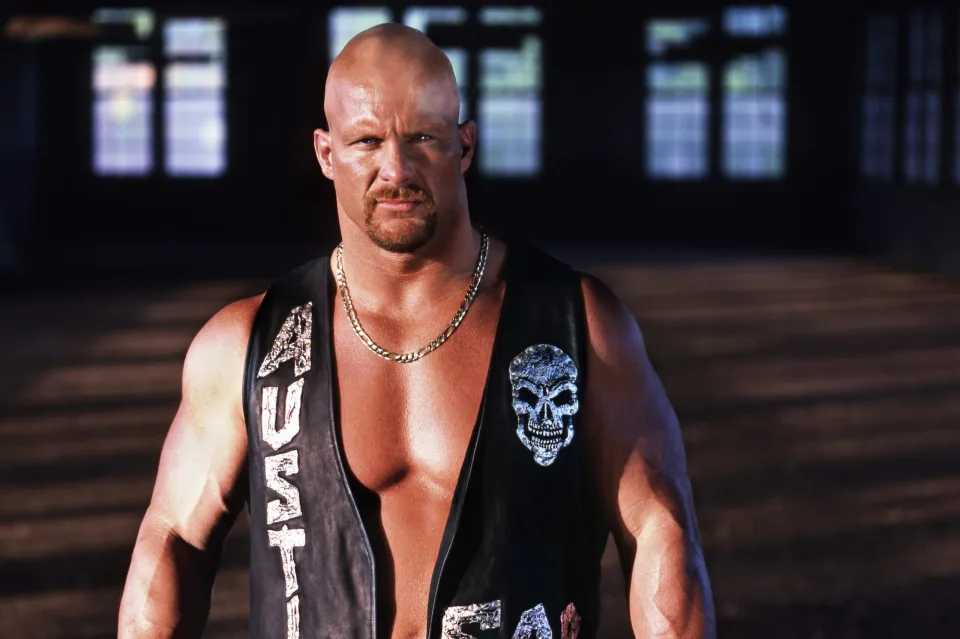
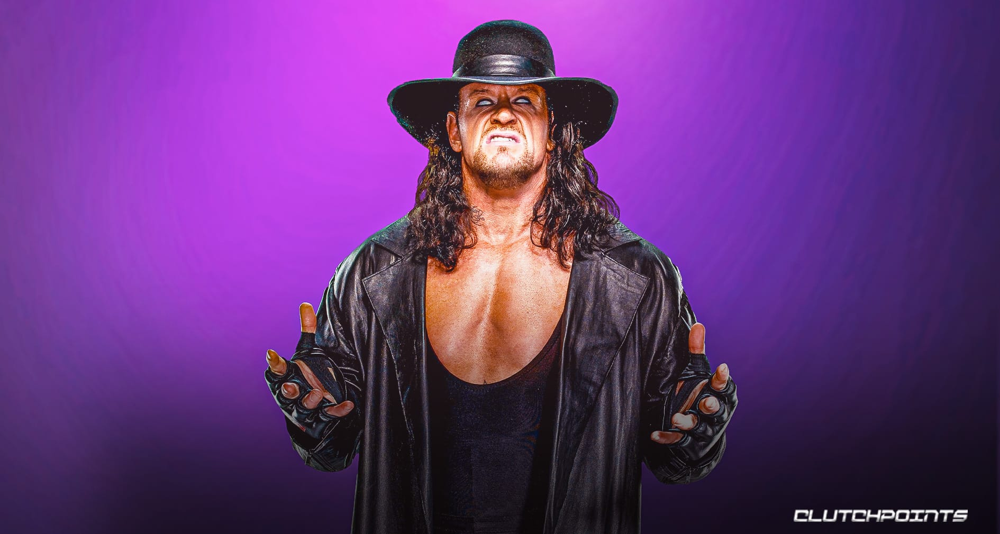
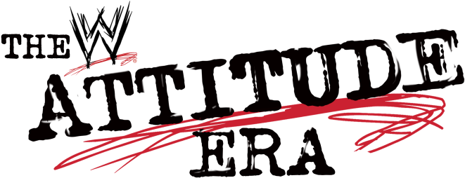
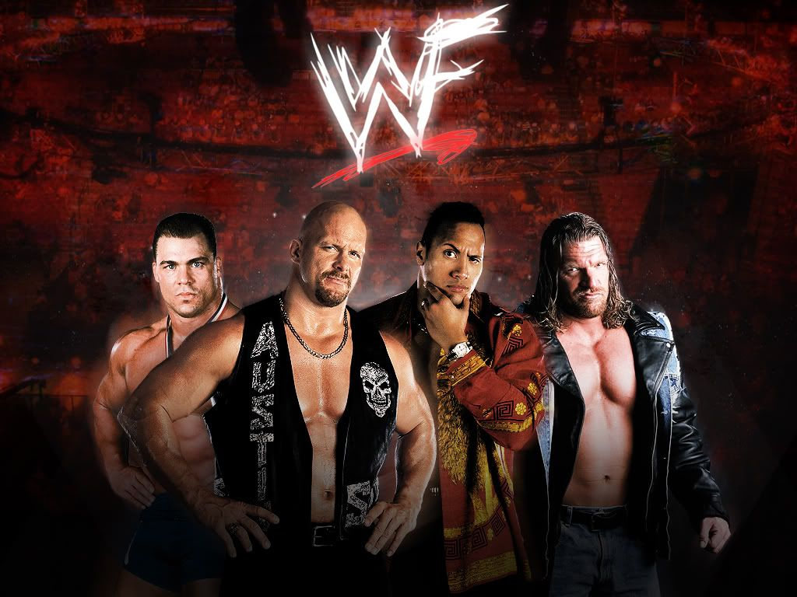
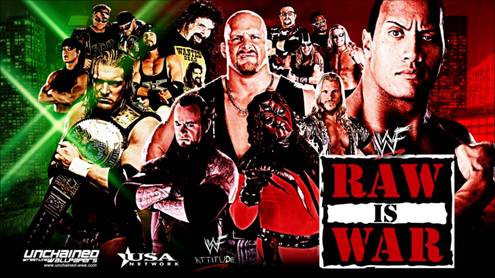
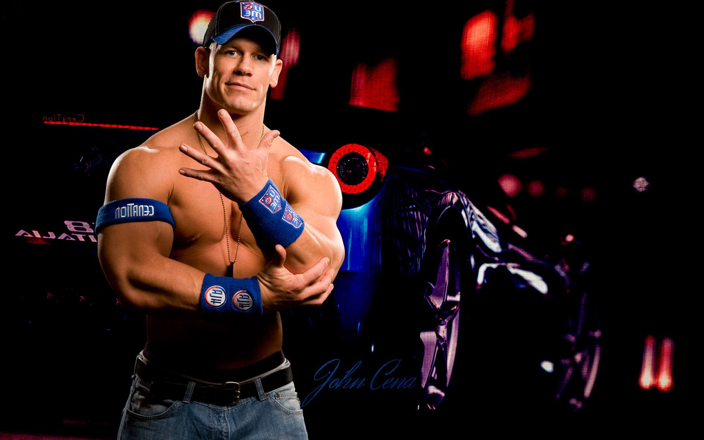
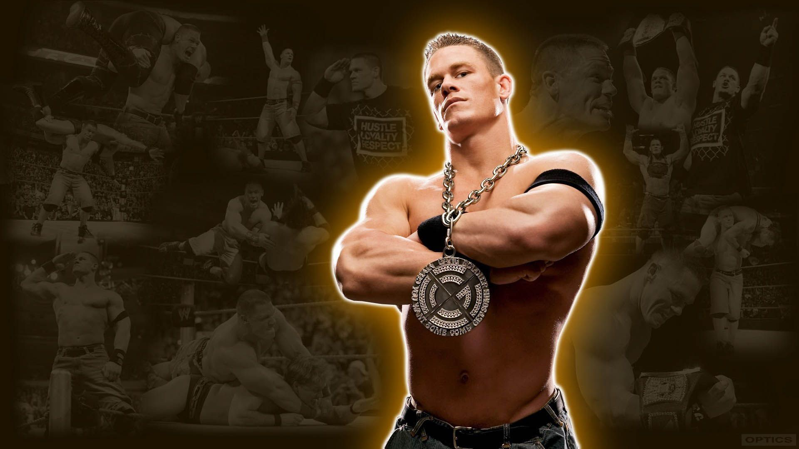
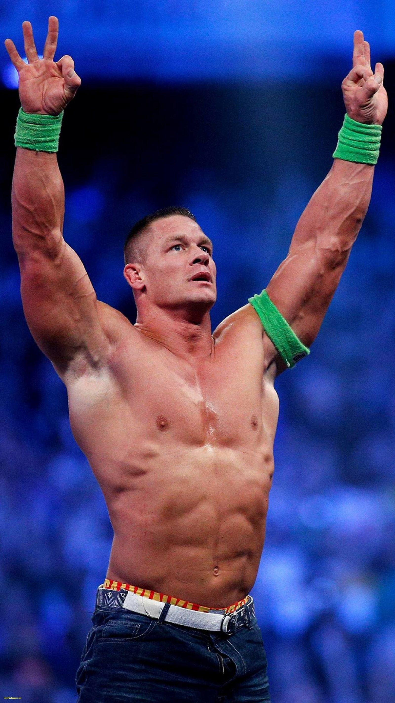

<!DOCTYPE html>
<html lang="en"></html>
<head>
    <meta charset="UTF-8">
    <meta name="viewport" content="width=device-width, initial-scale=1.0">
    <meta http-equiv="X-UA-Compatible" content="ie=edge">
    <title>Wrestling for Africa</title>
    <link rel="stylesheet" href='styles.css'>
 </head>

 <body>
  
   <h1>Welcome to Wrestling for Africa</h1> 
   <h2>Time to Play the Game</h2>
    <p>Here to Learn More About the Wrestling culture in Africa.</p>
    <p> But before we delve into that let's take a little vote.</p>
    <h4>WHO DO YOU THINK IS THE GREATEST WRESTLER TO EVER COME OUT OF THE ATTITUDE ERA?</h4>
    <h4>Votes: <span id="vote-count">Wrestler</span></h4>
     <div>
    <form id="vote-for-Austin">
    
    <input type="text" placeholder="Vote for Stone Cold" id="votes" name="votes" />
    <input type="submit" value="Vote" />

 </form>
    <form id="vote-for-rock">
     
     <input type="text" placeholder="Vote for The Rock" id="votes" name="votes" />
     <input type="submit" value="Vote"/>
    </form>

    <form id="vote-for-undertaker">
        
        <input type="text" placeholder="Vote for The UnderTaker" id="votes" name="votes" />
        <input type="submit" value="Vote" />
    </form>
 
 <button id="reset-btn">Reset Votes</button>
    <p>Wrestling really began being popular in Kenya(home country) in the late 90s successfully hitting it's peak in the early 2000s when local broadcasters began showcasing weekly shows such as Smackdown and Monday Night Raw every Sunday afternoon and Tuesday Evening respectively.
   Some of the biggest superstars to emerge were the likes of The Rock, Stone Cold Steve Austin (though this was towards the tail-end of his career, his boom began in 96 with the Austin 3:16 promo), The Undertaker and the man currently at the helm of WWE as of November 2022, Triple H.</p>
   <div>
    
   
   
   </div>
   <p>As the attitude era was coming to a close in 2002-2003, there emerged a new era that would come to redefine the titanic sports entertainment company that is WWE which came to be known as The Ruthless Aggression Era that was spearheaded by the franchise player, Mr. You can't see me and above all a record-tying 16 time world champion, JOHN CENA otherwise known as Big Match John. John Cena made his debut in June 18th 2002 against Kurt Angle when he answered his open challenge made in the ring, originally supposed to be The Undertaker to answer the call but sadly he wasn't feeling well on the particular day and John got his opportunity and boy did he not squander it. Once the bell rang and the match was set, Big match John pushed Kurt Angle to his limits taking him from 0 to 60 in mere seconds matching speeds with a Bugatti(not really) but hope you get the visual. In short, it was a great match and helped launch John's Career, though he almost got his release from the company that same year but more on that later. Well, we've just introduced John as our marquee face of the company, let us look at other notable superstars who emerged from this era. </p>
     <div>
      
      
      
    </div>

   <a href="about.html">More Info</a>
 
   <script type="text/javascript" src='index.js'></script>

 </body>
 </html>